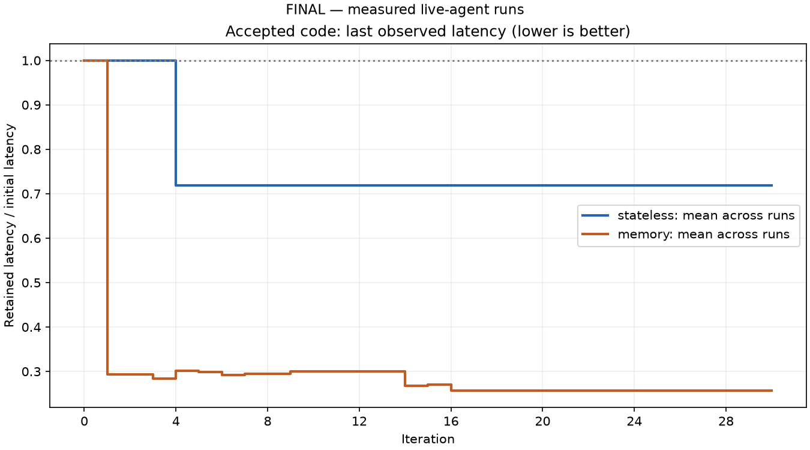

Stopped at the user's request. 61 of 300 planned final-study attempts were recorded: one complete 30-attempt pair and one additional memory attempt. Seven scheduled runs were not started. No further model calls are running.
| Measure | Stateless | Memory |
|---|---|---|
| Attempts | 30 | 30 |
| Accepted changes | 1 | 2 |
| Correct / evaluated candidates | 1 / 29 | 11 / 30 |
| Independent final latency | 2.747079 ms | 0.995450 ms |
| Input tokens | 902,663 | 1,447,992 |
The observed stateless/memory latency ratio is 2.760×. This is one pair, not a replicated finding. Memory's largest gain occurred at attempt one, before history existed. Stopping followed visible interim results. No significance or causal memory-benefit claim is justified.
Values carry the last measured retained-code latency; small changes can reflect remeasurement noise. They are not 30 independent samples. The partial second memory run is excluded from these figures.


2,000 seeded synthetic notes; seed 7; 100 cycles × 12 requests × five repetitions = 6,000 timed requests per snapshot. Each cycle contains one Add, three Get, one Update, one Delete, and six List/Search calls. Fresh process/database per repetition; two read-only warmups; concurrency one; median of repetition means. Only memory Planner receives complete prior-attempt history. Acceptance requires correctness and more than 8% improvement.
The supplied model alias was default; all final-study responses reported qwen3.6:35b. An immutable weight version and monetary pricing were unavailable. Pilots and failed provider compatibility runs remain separate cohorts.